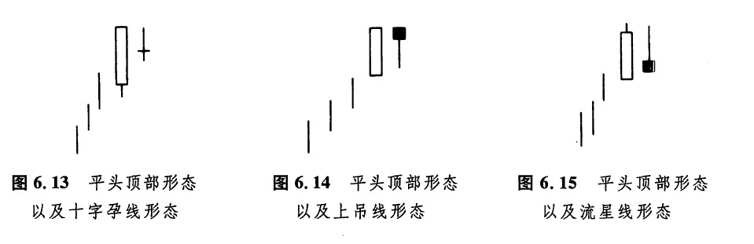
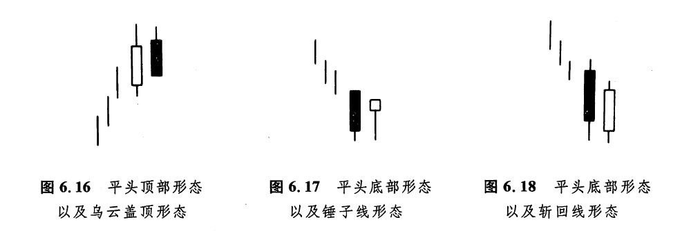
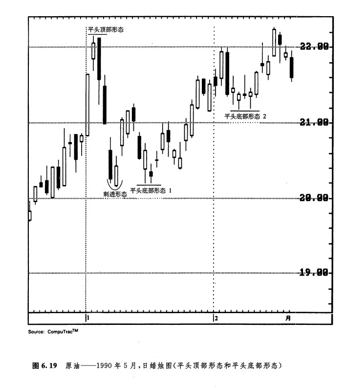
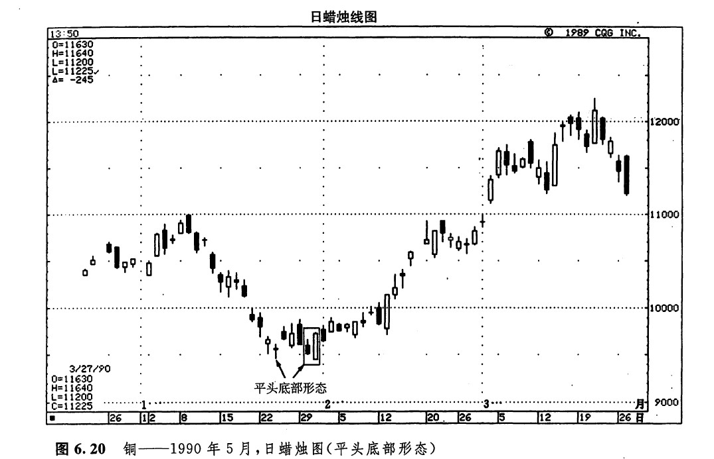
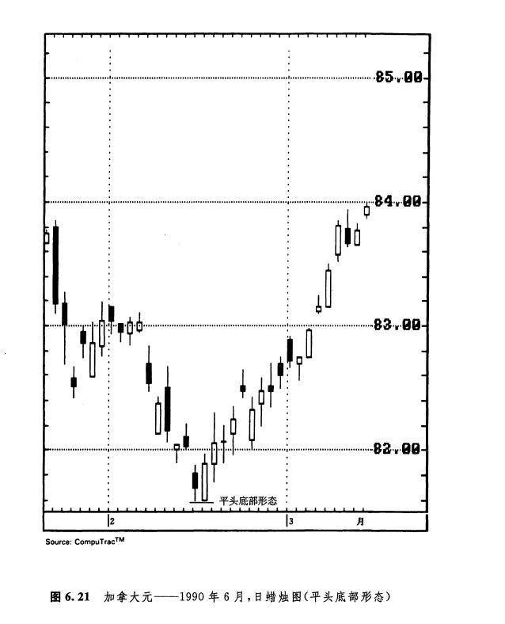
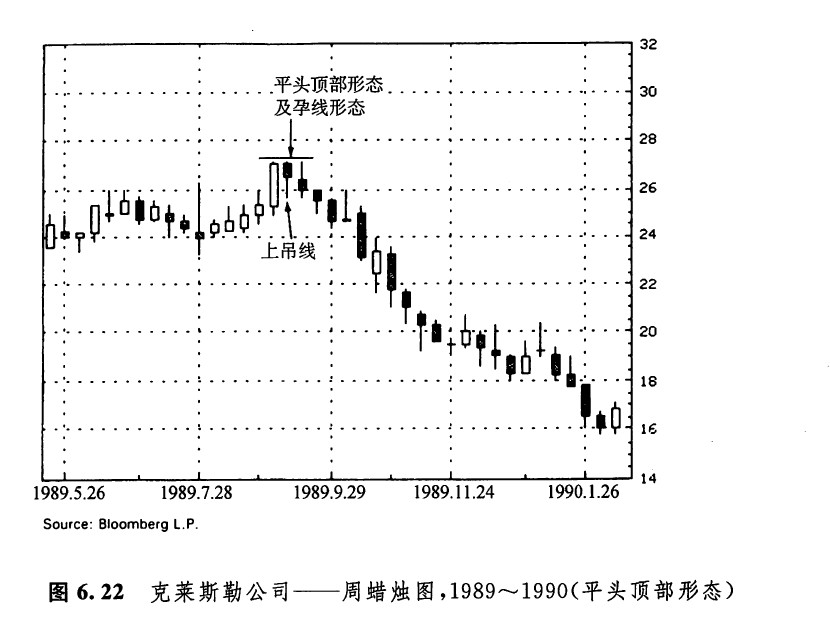
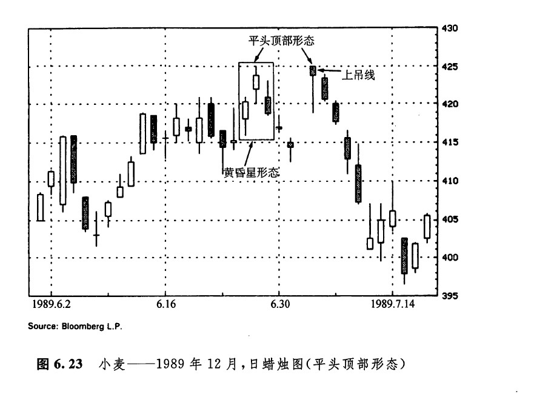
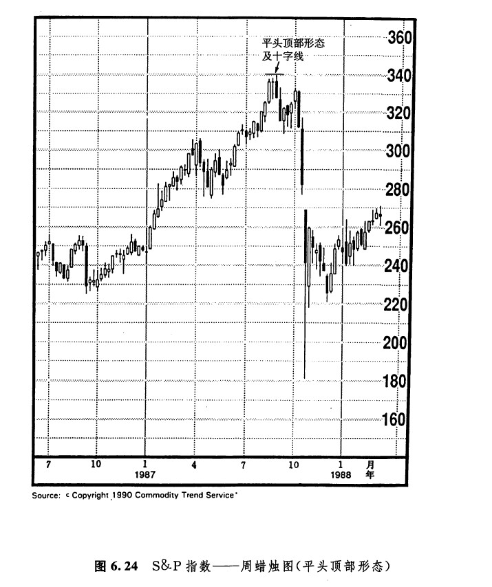

平头形态是由具有几乎相同水平的最高点的两根蜡烛线组成的，或者是由具有几乎相同的最低点的二根蜡烛线组成的。之所以将这种形态称为平头形态，是因为这些蜡烛线的端点就像慑子腿一样平齐。在上升的市场中，当几根蜡烛线的最高点不相上下时，就形成了一个平头顶部形态。在下降的市场上，当几根蜡烛线的最低点基本一致时，就形成了一个平头底部形态。平头形态既可以由实体构成，也可以由影线或者十字线构成。平头形态既可以由相邻的蜡烛线组成，也可以由相隔较近的蜡烛线组成。不过，在这种情况下，它通常不能成为一个决定性的反转形态。构成平头形态的蜡烛线也可能相距甚远，并且其中间夹着较长期的市场变化；或者在平头形态之内，同时包含着其他看肤的蜡烛图因素（在构成顶部反转信号时），或者同时包含着其他看涨的蜡烛图因素（在构成底部反转信号时）。在这样的情况下，平头形态就多了一些额外的技术分量，从图6.13到图6.18的各个示意图所揭示的就是上述概念。
如图6.13所示，在上升趋势中，先是一根长长的白色蜡烛线，后是一根十字线。这个二蜡烛线形态既是一个十字孕线形态，又是一个平头形态，因为这两根蜡烛线具有同样的最高点。综合来看，这个形态可能构成了重要的反转信号。如图6.14所示，在这个平头形态中，先是一根长长的白色蜡烛线，后是一根上吊线。下一天，如果市场开市于上吊线的实体之下，那么，把这个形态判断为一个顶部反转信号，就有了很大的胜算。只要市场的收市价不高于这个平头形态的顶部，那么这种看跌的态度就不可动摇。这个二蜡烛线的混合体也可以看做一个孕线形态。结合以上分析，这个孕线形态处于上升趋势中，构成了一个顶部反转形态。如图6.15所示，在这个平头顶部形态中，第二根蜡烛线同时又是一根看跌的流星线。尽管它不是一根真正的流星线，但是根据形成这根蜡烛线的价格变化过程，这根线本身是看跌的。在这根蜡烛线上，市场开市于最低点，然后上冲到前一天的最高价的水平，后来却收市于当日的最低点附近。另外，本形态还可以看成孕线形态。
如图6.16所示，是一个乌云盖顶形态的变体。在这个形态中，第二天的开市价高于第一天的收市价（而不是高于第一天的最高价）。黑色蜡烛线的最高点曾经触及前一天的最高点，而后市场再回落。这个形态既可以看做乌云盖顶形态，也可以看做平头顶部形态，是一个双重组合。如图6.17所示，在这里的二蜡烛线形态中，后一根为锤子线，并且它成功地向下试探了前一根长长的黑色蜡烛线的最低点。锤子线、市场对支撑水平的成功试探，两方面因素同时证明卖方已经丧失了对市场的控制。最后，这个二蜡烛线组合也可以视为孕线形态。这是将此处判断为一个重要支撑水平的第三条理由。如图6.18所示，为一个看涨剌透形态的变体，它同时还构成了一个平头底部形态。两者形成了一个有力的组合。在理想的刺透形态中，第二天的开市价低于第一天的最低点。但是在这个形态中，第二天的开市价仅低于第一天的收市价。


上面列举的各种平头形态的例子并没有把所有的可能性一网打尽。我们只选择了一些具有代表意义的实例，通过它们来说明平头顶部形态和平头底部形态应当得到其他蜡烛图指标的验证，如此便能够上升为一种很有价值的预测工具。对于希望获得长期的市场看法的朋友来说，不妨选用周蜡烛线图和月蜡烛线图进行研究，在这种情况下，由相邻的蜡烛线形成的平头顶部形态和平头底部形态可能构成重要的反转信号。这类形态甚至在没有其他蜡烛图信号相验证的条件下，也是成立的。我们不妨用下面的例子来说明其原因。在周蜡烛线图或月蜡烛图上，如果前一个时间单位的低点在后一个时间单位内成功地经受了市场向下的试探，这个低点就可能构成重要的市场底部，引发上冲行情。在日蜡烛线图上，类似的情况可能就不那么重要了，因为今天成功地经受试探的不过是昨天的低点，演变成市场底部、引发上冲行情的可能性就不如上面的例子大。
如图6.19所示，为平头顶部形态和平头底部形态的实例。在图示的平头顶部形态中，当第二天的蜡烛线同时完成了一个看跌吞没形态后，平头顶部形态就得到了验证。在平头底部形态1中，包含了一根星线。另外请注意，这个平头底部形态是由相邻的两天形成的，在其形成过程中，市场还对前一周的刺透形态进行了成功的试探。平头底部形态2是由两根锤子线组成的。平头底部形态，加上两个锤子线，两个方面的看涨指标合而为一，揭开了一轮上冲行情的序幕。

如图6.20所示，1月24日的低点在0.95美元附近，一周后市场重新向下试探了这一水平。这次试探不仅是成功的，而且同时形成了一个看涨吞没形态。如图6.21所示，在2月14日和15日，市场既形成了一个二日的平头形态，也完成了一个看涨吞没形态。如图6.22所示，在一根长长的白色蜡烛线之后，出现了一根上吊线。这两个星期的最高价处于同样的水平（这种情况甚至包括第三周），于是形成了一个平头顶部形态。在这个平头形态中，两根蜡烛线同时也构成了一个孕线形态。如图6.23所示，6月下旬出现了一个黄昏星形态的变体。在真正的黄昏星形态中，我们希望看到第一根蜡烛线是一根较长的白色蜡烛线。尽管如此，这里还是演变成了一个阻挡区域，下周的上吊线证明了这一阻挡区域的存在。这条上吊线曾经向上达到了前一周的最高点，但功败垂成。于是，形成了一个平头顶部形态。




如图6.24所示，为标准普尔指数的周蜡烛线图。在1987年8月的峰处，前面是一根长长的白色蜡烛线，后面跟着一根十字线，形成了一个平头顶部形态。该形态在下一周起到了阻挡作用。在这里，除了平头顶部形态的信号外，还有其他危险信号：在高价格水平上，一根长长的白色蜡烛线后出现了一根十字线。第八章我们将详细讨论有关问题。
